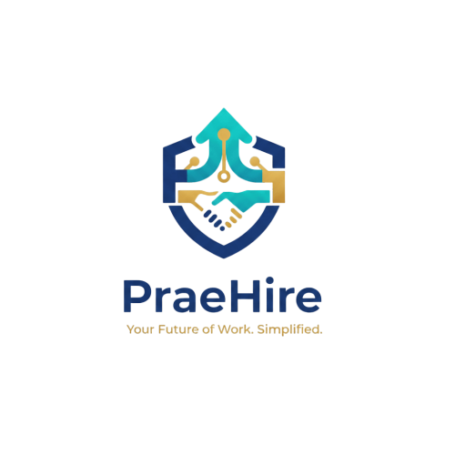

I am Jeremiah Adedurin (also known as Jerry), the CTO of Prae Technologies and the architect of PraeHire.
My journey into technology wasn't just a choice—it was a battle. In 2011, I faced a life-altering medical challenge: a stroke. While many thought my story would stop there, I used it as the fuel for my transformation.
I fought through the recovery, taught myself to master complex systems, and pursued a degree in Computer Science. In March 2026, I graduated from the University of the People, turning a decade of recovery into a career of innovation.
I built PraeHire because I know what it means to face impossible odds. Whether you are recovering from a setback or just trying to break into a global market from Lagos, the job hunt is hard. I created this AI-powered assistant to give everyone—regardless of their background—the tools to build a world-class career.
© 2026 Prae Technologies | Built by a Graduate, for the Future.